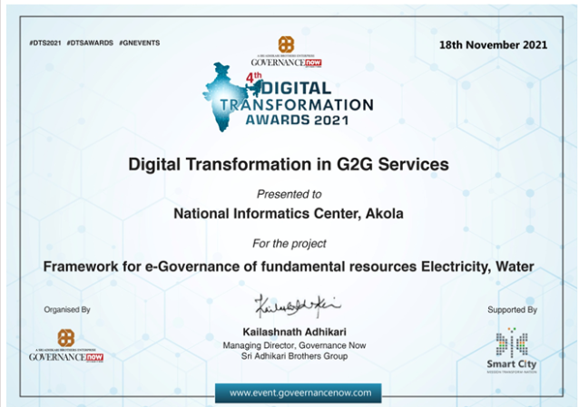
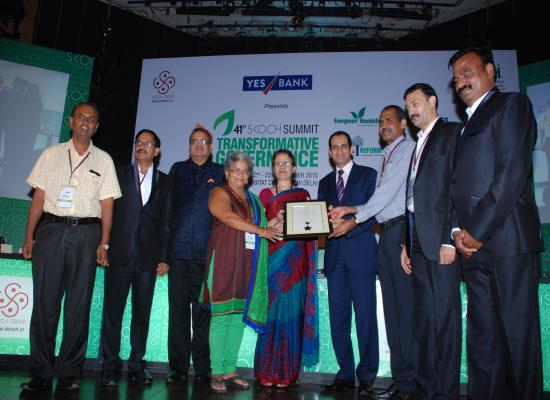
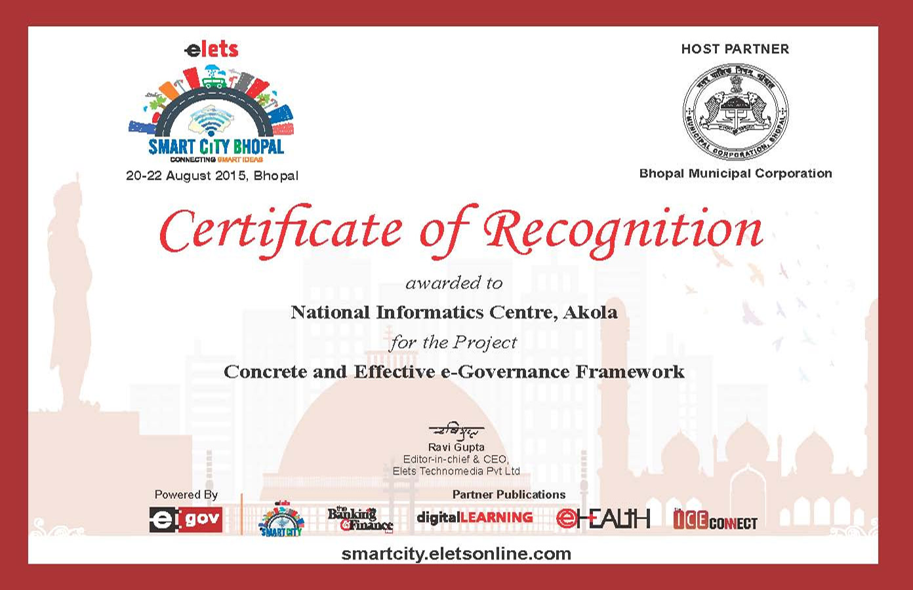
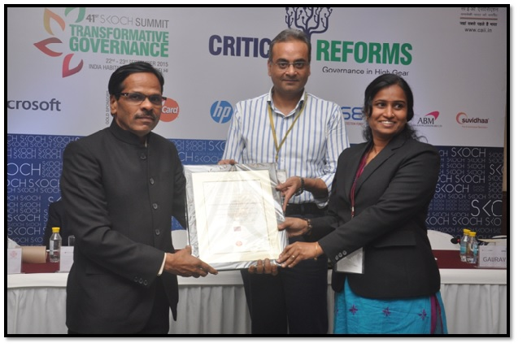
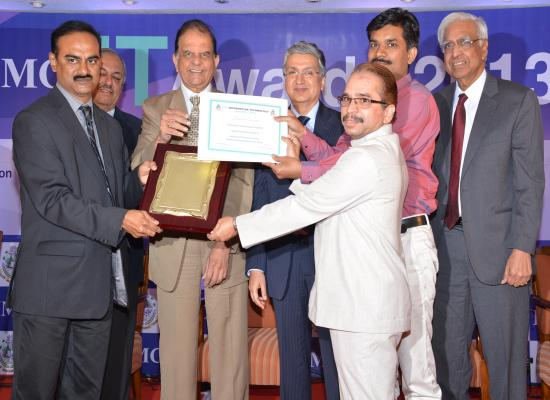

Achievements of Government of Maharashtra
1)NIC Akola, Maharashtra has received Digital Transformation Award 2021 under the category Digital Transformation in G2G services
Award for the Year: 2021
NIC, Akola has received Digital Transformation Award 2021 under the category Digital Transformation in G2G services for the initiative Framework for e-Governance of fundamental resources like Electricity, Water
Team Members :
Shri Nitin Vishnu Choudhari,Scientist-D
Shri Anil S. Chinchole, Scientist-D

2)IMC Digital Technology Award for the excellence for Best Digital Implementation to NIC Nandurbar, Maharashtra
Award for the Year: 2020
MC Digital Technology Awards 2020 – Award for Best Digital Implementations in Government Sector Presented to National Informatics Centre Nandurbar for Project Arogya Darshak Maps GIS Mapping of Containment Zones and Hospitals
Team Members :
Shri Dharmendra Rupchand Jain,Scientist-F
Shri Surendra Purushottam Patil,Scientist-B

3)NIC Maharashtra receives Best Performance Award for implementation of eProcurement software
Award for the Year: 2018
NIC Maharashtra has been conferred with the prestigious Best Performance Award to Maharashtra in implementation of eProcurement software award by the Ministry of Finance, Govt. of India for the year 2018. The award was given in the category – National, for the project eProcurement Software implementation in Maharashtra State, developed by NIC Maharashtra.
The team members involved in the projects were:
Moiz Hussain Ali SIO Maharashtra
Mr. Gondane B.D PSA
Mrs. Ireni A TD
Mr. Vedula Srinivas PSA

4)Software Development Unit, NIC, Pune receives Skoch Order of Merit Awards
Award for the Year: 2015
Software Development Unit, NIC, Pune has been conferred with the prestigious Skoch Award for Order of Merit award by the SKOCH for the year 2015. The award was given in the category – National, for the project iSarita, Department of Stamps and Registraiton, Govt. of Maharashtra, developed by Software Development Unit, NIC, Pune.
The team members involved in the projects were:
Mr. Lqique UL Haque, Principal Systems Analyst

5)NIC Akola receives Elets SMART CITY Awards
Award for the Year: 2015
NIC Akola has been conferred with the prestigious elets SMART CITY award by the eLets for the year 2015. The award was given in the category – National, for the project Concrete and Effective e-Governance Framework, developed by NIC Akola.
The team members involved in the projects were:
DIO and ADIO NIC, Akola District Centre

6)National Informatics Centre Kolhapur receives SKOCH Smart Governance Awards
Award for the Year: 2015
National Informatics Centre Kolhapur has been conferred with the prestigious SKOCH Smart Governance award by the SKOCH for the year 2015. The award was given in the category – National, for the project e-DISNIC (Electronic District Information System of NIC), developed by National Informatics Centre Kolhapur .
The team members involved in the projects were:
DIO and ADIO NIC Kolhapur District Centre

7)Software Development Unit, NIC, Pune receives Information Technology Product Awards
Award for the Year: 2013
Software Development Unit, NIC, Pune has been conferred with the prestigious Information Technology Product award by the Indian Merchant Chambers Mumbai for the year 2013. The award was given in the category – National, for the project Government Receipt Accounting System, developed by Software Development Unit, NIC, Pune.
The team members involved in the projects were:
Mr. Balakrishna Nair,Technical Director and
Mr. Vishal Naldurgkar, Systems Analyst

8)Maharashtra receives The National E-Governance Award 2008-2009 (Best Government Web Site category) Awards
Award for the Year: 2009
Maharashtra has been conferred with the prestigious The National E-Governance Award 2008-2009 (Best Government Web Site category) award by the Department of Administrative Reforms, Government of India for the year 2009. The award was given in the category – National, for the project , developed by Maharashtra.
The team members involved in the projects were:
D C Misra, STD
Ms. Rama Hariharan, TD
Ms. Anjali, TD
Rajiv Goel, PSA
S P Nautiyal, PSA
Adesh Gupta, SSa
N P Sreejith, Scientific Officer SB

Significant Achievements in the last 5 years